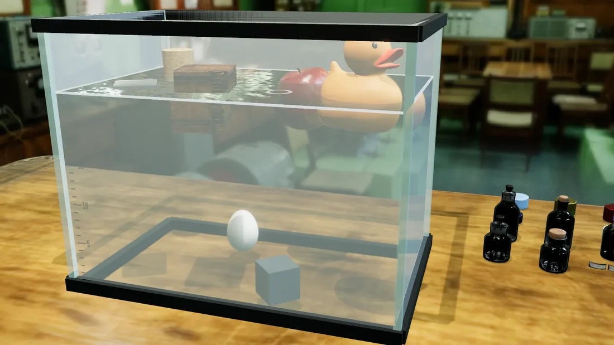

Bu haftanın göreviKaldırma kuvvetiETKİLEŞİMLİ DENEYÜcretsiz
Yumurtayı askıda bırak
Sıvının özkütlesini değiştir. Yumurtayı tabana değmeden, suyun içinde dengede tut.
HEDEFNe yüzsün, ne batsın.Özkütleyi ayarla · Sonucu kontrol et
Görevi aç